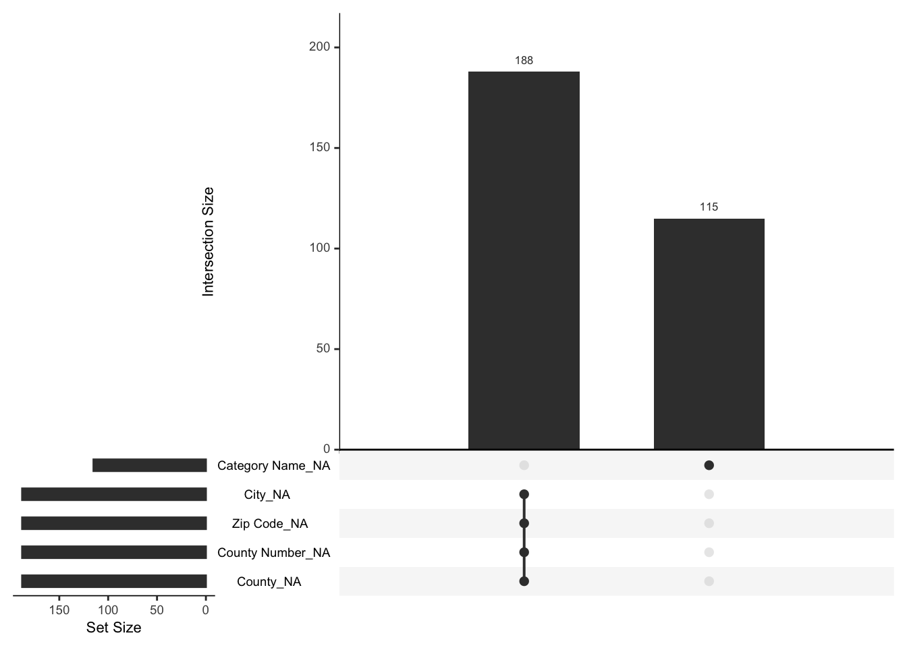

Chapter 3 Data
3.1 Sources
In this 2019 Iowa Liquor Sales dataset, there are very few missing values. There are as many as 24 attributes, which include Date of consumption, Store Name, Category Name, Vendor name and more, detailing every single alcohol consumption. In addition, this dataset is rich in Catigorical Data as well as Numerical Data, and we can use as many kinds of charts as possible to explore the data in the subsequent analysis.
The dataset was collected from grocery stores, liquor stores, convenience stores and so on which has Class E liquor license. We can export it as csv file and import to Rstudio. The dataset consists of 2.38 million points with 24 columns. With reference to the purpose of our study, we do not need to use all of the data.
Basic information about the data:
We sampled out 100,000 items of data on alcohol sales. Among them, the records with some missing columns are 303, less than 0.3% of the total. A total of 1735 stores contributed data, and the data included 53 types of wine. We have already covered continuous data and categorical data in detail in data availability section.
Describe any issues / problems with the data:
We did find some data issues, for example, all Sunday sales data was missing from our dataset. Outside of the initial time, a portion of the Saturday data was also missing. This part of missing is not shown in the missing value analysis because a whole row of data is not recorded. The absence of this part of the data slightly affected our analysis. In the time series analysis part, we were able to find that the sales figures were higher in the second half of the year, and one of the factors was the presence of Saturday data in the second half of the year. To avoid this issue from affecting our exploration of data periodicity, we choose pin Friday data to explore whether the data are cyclical.
3.2 Cleaning / transformation
Originally, raw data contains 2380345 rows, since the source data file size is too large, the source file is over 500MB, which exceeds the limit of GitHub upload and R manipulation, we first used Python to randomly sample 100000 data as the research data for this project.
Then, to ensure as efficient a run as possible in the study, we removed some columns that were not very relevant to the research, or that were related to other columns. Like Store Location, which accurate to latitude and longitude in raw dataset. We do not think we need to include Store Location since the Zip code variable seems more usable. Similarly, we delete address variable. AS for Invoice/Item Number, it is just the id of each flow, and we think that the multivariate afterwards can avoid duplication.
3.3 Missing value analysis
To explore the presence of missing values, we first count how many missing values exist for each column. From the displayed results, we have a small percentage of missing values in our dataset, for example Store Name, Store Number, Date and these columns do not have missing values. The attributes that do have the highest number of values are concentrated in City, Zip Code, County Number, County. And they have the same exact data, which inspired us to explore the pattern of missing values.
## City Zip Code County Number County Category
## 188 188 188 188 115
## Category Name Bottles Sold State Bottle Cost State Bottle Retail Volume Sold (Gallons)
## 115 7 1 1 1
## Date Store Number Store Name Vendor Number Vendor Name
## 0 0 0 0 0
## Item Number Item Description Pack Bottle Volume (ml) Sale (Dollars)
## 0 0 0 0 0
The package naniar provides us with a good visualization method. gg_miss_upset function visually shows us what the missing data values are and which columns have missing values. In addition to that, there are some associated missing values column, connected by a solid black line. There is a clear and strong correlation between the geographical location and the attributes of the city. In City, Zip Code, County Number, County. Once one is missing, all other values are also missing. They are a set of combinations together. In addition, another independent missing value attribute is Category Name, but there are not many, out of 100,000 data, only 115 data do not have this attribute.
Since the absence of a particular attribute in the data is rare, direct deletion does not affect the rendering of the data. We choose to delete the missing value using na.omit() function.